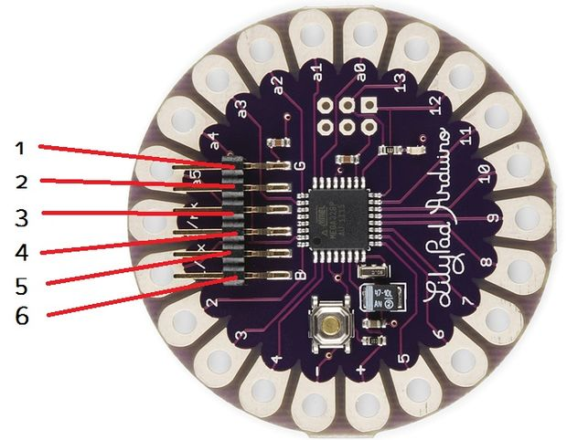

Connections

Lily 1 -> Uno Reset
Lily 2 -> Uno TX1
Lily 3 -> Uno RX0
Lily 4 -> Uno 3.3v
Lily 5 -> None
Lily 6 -> Uno GND
Remove Chip

Do not skip, it will program both the UNO and the Lily.
IDE Set up

Select the Arduino uno on com port
Set programmer to AVRISP mkll
and for the board select LilyPad Arduino.
Test It!
// attach led + to pin 3 and - to - on lilypad (c)
// the setup function runs once when you press reset or power the board
void setup() {
// initialize digital pin 3 as an output.
pinMode(3, OUTPUT);
}
// the loop function runs over and over again forever
void loop() {
digitalWrite(3, HIGH); // turn the LED on (HIGH is the voltage level)
delay(1000); // wait for a second
digitalWrite(3, LOW); // turn the LED off by making the voltage LOW
delay(1000); // wait for a second
}
Just upload the code like normal now!